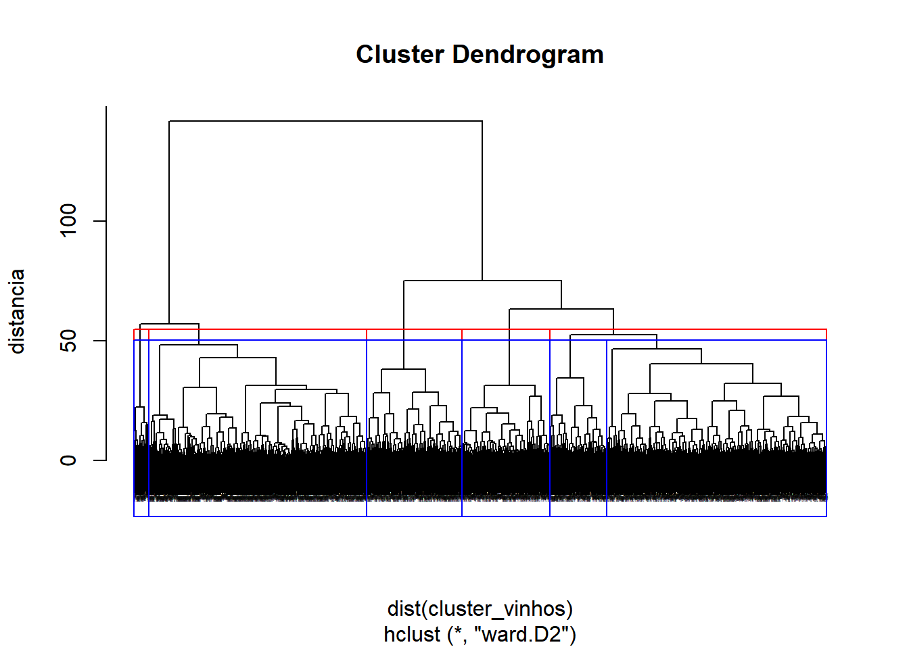
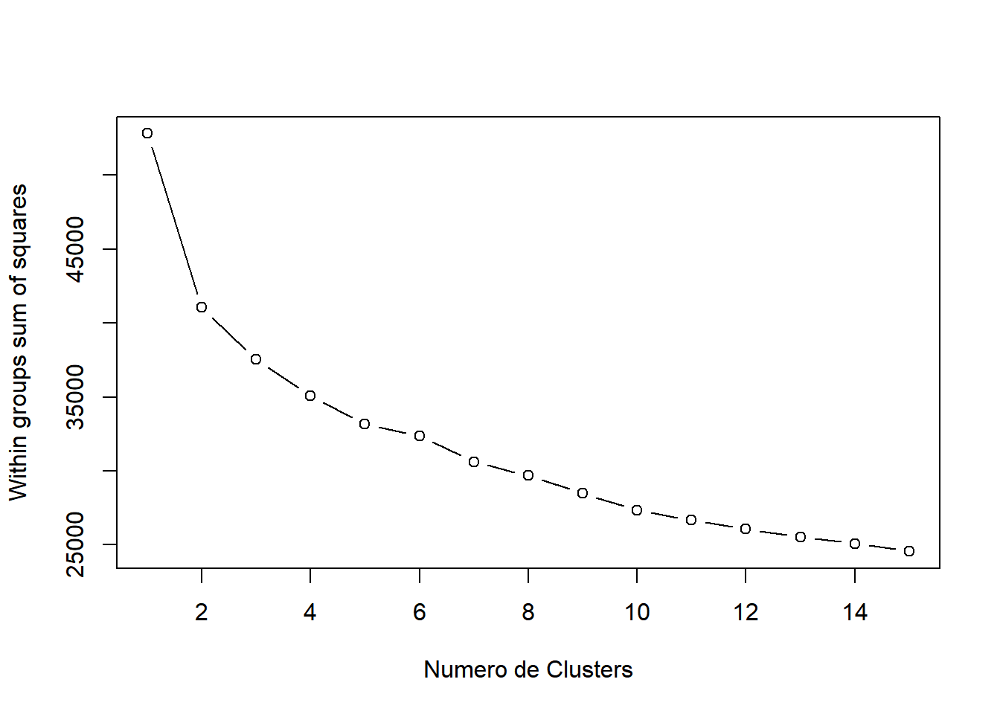
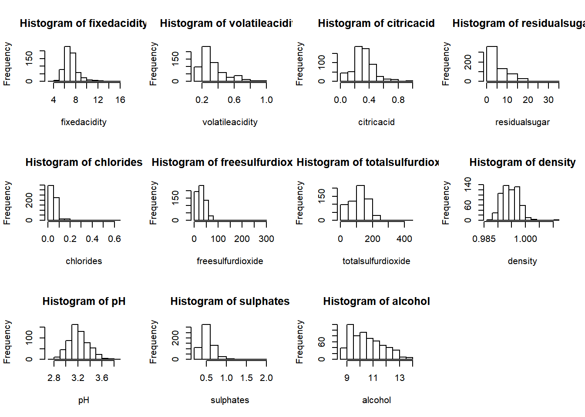
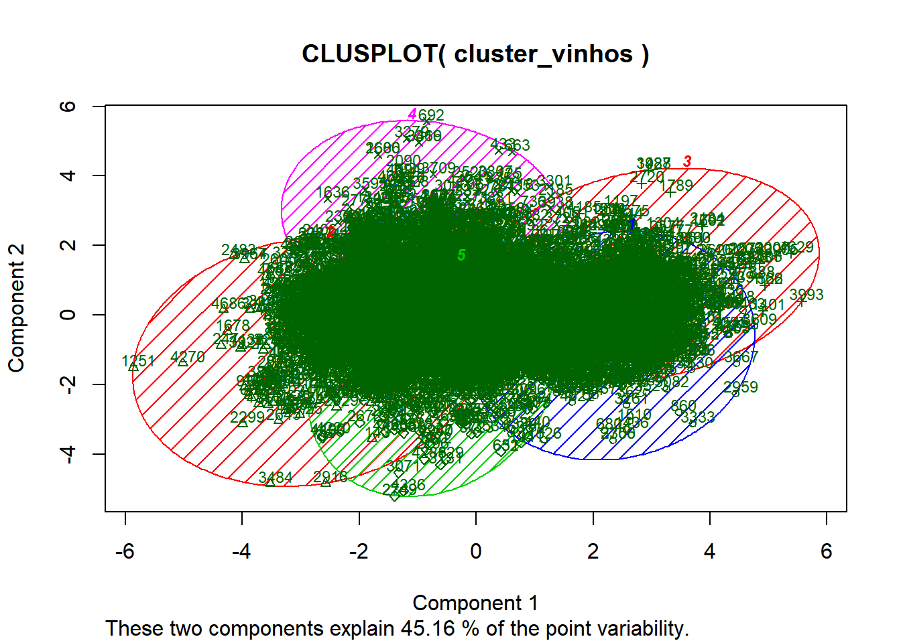
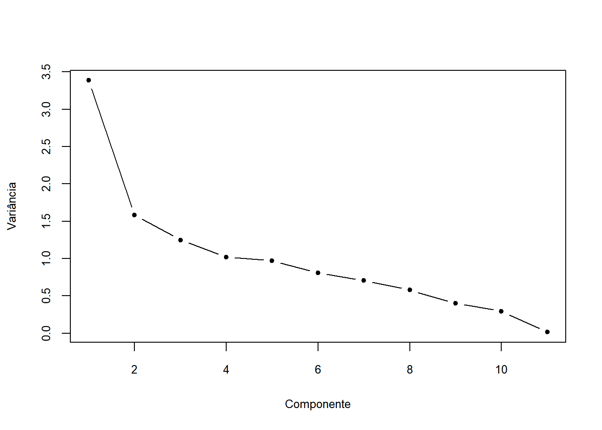
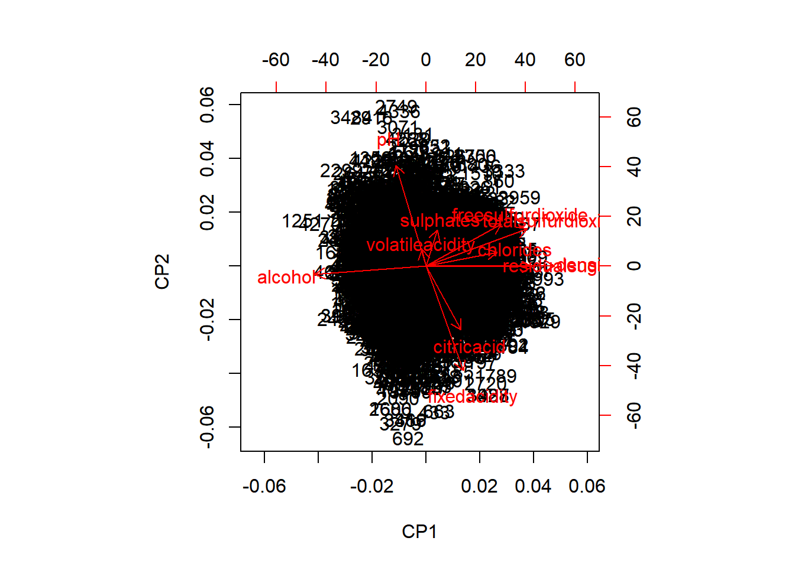
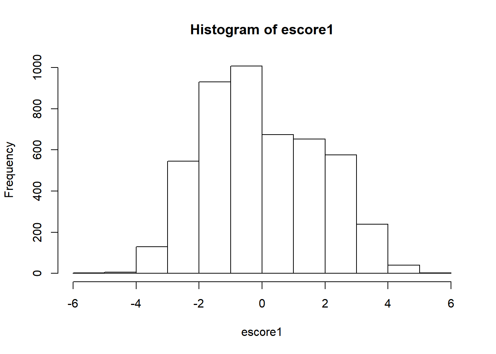

##Faça um algoritmo que a partir das características físico-químicas dos vinhos defina grupos para auxiliar na importação de vinhos brancos. ## Lendo o arquivo csv
BaseWine_Red_e_White <- read_delim("BaseWine_Red_e_White.csv",
";", escape_double = FALSE, col_types = cols(volatileacidity = col_double()),
locale = locale(decimal_mark = ","),
trim_ws = TRUE)
# remove duplicatas
BaseWine_Red_e_White <- BaseWine_Red_e_White %>% distinct()
# remove outliers
for (x in c("fixedacidity", "volatileacidity", "citricacid",
"residualsugar", "chlorides", "freesulfurdioxide",
"totalsulfurdioxide", "density", "pH",
"sulphates", "alcohol")) {
outliers <- boxplot(BaseWine_Red_e_White[[x]], plot=FALSE, range=3)$out
if( !is.null(outliers) & length(outliers) > 0 ) {
BaseWine_Red_e_White <- BaseWine_Red_e_White[-which(BaseWine_Red_e_White[[x]] %in% outliers),]
}
}BaseVinhos <- BaseWine_Red_e_White
BaseVinhos <- subset( BaseVinhos, select = -id_vinho )
BaseVinhos <- subset( BaseVinhos, select = -quality )
#view(BaseVinhos)#set.seed(10)
#amostra_vinhos <- BaseVinhos[sample(1:nrow(BaseVinhos), 600),]
#View(amostra_vinhos)
amostra_vinhos <- BaseVinhos %>% filter(Vinho == "WHITE")
amostra_vinhos <- subset( amostra_vinhos, select = -Vinho )cluster_vinhos <- scale(amostra_vinhos)
summary(cluster_vinhos)## fixedacidity volatileacidity citricacid residualsugar
## Min. :-3.65758 Min. :-2.0015 Min. :-2.9108 Min. :-1.1641
## 1st Qu.:-0.66004 1st Qu.:-0.6790 1st Qu.:-0.5351 1st Qu.:-0.9430
## Median :-0.06054 Median :-0.1704 Median :-0.1391 Median :-0.2397
## Mean : 0.00000 Mean : 0.0000 Mean : 0.0000 Mean : 0.0000
## 3rd Qu.: 0.53897 3rd Qu.: 0.4400 3rd Qu.: 0.4328 3rd Qu.: 0.7047
## Max. : 4.61562 Max. : 6.4420 Max. : 4.2164 Max. : 3.9499
## chlorides freesulfurdioxide totalsulfurdioxide density
## Min. :-2.59012 Min. :-2.04437 Min. :-3.07030 Min. :-2.3669
## 1st Qu.:-0.57809 1st Qu.:-0.74566 1st Qu.:-0.71329 1st Qu.:-0.7904
## Median :-0.05646 Median :-0.06538 Median :-0.09428 Median :-0.1035
## Mean : 0.00000 Mean : 0.00000 Mean : 0.00000 Mean : 0.0000
## 3rd Qu.: 0.46518 3rd Qu.: 0.67674 3rd Qu.: 0.69139 3rd Qu.: 0.7208
## Max. : 7.02291 Max. : 4.75842 Max. : 5.44112 Max. : 3.0735
## pH sulphates alcohol
## Min. :-3.11159 Min. :-2.3574 Min. :-2.0528
## 1st Qu.:-0.66022 1st Qu.:-0.6990 1st Qu.:-0.8345
## Median :-0.06394 Median :-0.1752 Median :-0.1036
## Mean : 0.00000 Mean : 0.0000 Mean : 0.0000
## 3rd Qu.: 0.59860 3rd Qu.: 0.5231 3rd Qu.: 0.7086
## Max. : 4.17628 Max. : 5.1494 Max. : 2.9826hier_cluster <- hclust(dist(cluster_vinhos),method='ward.D2')
plot(hier_cluster, ylab='distancia', cex=0.1)
groups <- cutree(hier_cluster, k=5) # cut tree into 5 clusters
# draw dendogram with red borders around the 5 clusters
rect.hclust(hier_cluster, k=5, border="red")
groups <- cutree(hier_cluster, k=6) # cut tree into 5 clusters
# draw dendogram with red borders around the 5 clusters
rect.hclust(hier_cluster, k=6, border="blue") 
wss <- (nrow(cluster_vinhos)-1)*sum(apply(cluster_vinhos ,2,var))
for (i in 2:15) wss[i] <- sum(kmeans(cluster_vinhos ,iter.max=100,
centers=i)$withinss)
plot(1:15, wss, type="b", xlab="Numero de Clusters",
ylab="Within groups sum of squares") 
library(tclust)
cluster1 <- tkmeans(cluster_vinhos, k = 4, alpha = 0.00)
plot(cluster1)
set.seed(2019)
output_cluster <- kmeans(cluster_vinhos,5)
segmento <- output_cluster$cluster
table(segmento)## segmento
## 1 2 3 4 5
## 919 941 766 1053 1123centros <- output_cluster$centers
centros## fixedacidity volatileacidity citricacid residualsugar chlorides
## 1 -0.0502304 0.14755859 -0.04111787 0.7107334 0.3240887
## 2 -0.6671802 0.51828161 -0.35282613 -0.5538075 -0.7670458
## 3 0.3337598 -0.05348752 0.52690499 1.3710766 0.7416630
## 4 0.9635779 -0.18668188 0.29695422 -0.5086857 -0.2818551
## 5 -0.5310145 -0.34351013 -0.30855325 -0.5758056 0.1359147
## freesulfurdioxide totalsulfurdioxide density pH sulphates
## 1 1.1312495 1.2177226 0.8543160 0.08198055 0.2006119
## 2 -0.4381814 -0.7747465 -1.1359722 0.26169880 -0.2313513
## 3 0.1539397 0.3502910 1.3054801 -0.64827983 -0.1438937
## 4 -0.5508767 -0.4952864 -0.3996269 -0.68255195 -0.3134994
## 5 -0.1470474 -0.1218495 -0.2630073 0.79582445 0.4217958
## alcohol
## 1 -0.7420609
## 2 1.2851632
## 3 -0.9747309
## 4 0.3176718
## 5 -0.1026262# quantas rodadas até chegar nos clusters
Qte_iter <- output_cluster$iter
Qte_iter## [1] 4aggregate(amostra_vinhos,by=list(segmento),FUN=mean)## Group.1 fixedacidity volatileacidity citricacid residualsugar chlorides
## 1 1 6.808596 0.2912514 0.3261371 9.930087 0.04810664
## 2 2 6.294049 0.3276939 0.2907120 3.637035 0.03346440
## 3 3 7.128851 0.2714883 0.3906919 13.216319 0.05371018
## 4 4 7.654131 0.2583951 0.3645584 3.861586 0.03997531
## 5 5 6.407614 0.2429786 0.2957435 3.527560 0.04558148
## freesulfurdioxide totalsulfurdioxide density pH sulphates alcohol
## 1 53.34929 189.1072 0.9964886 3.202024 0.5130577 9.613856
## 2 27.97184 105.4187 0.9906938 3.229150 0.4635707 12.109954
## 3 37.54634 152.6730 0.9978022 3.091802 0.4735901 9.327372
## 4 26.14957 117.1567 0.9928377 3.086629 0.4541595 10.918693
## 5 32.67943 132.8419 0.9932355 3.309768 0.5383972 10.401184library(cluster)
clusplot(cluster_vinhos, output_cluster$cluster, color=TRUE, shade=TRUE,
labels=2, lines=0 , cex=0.75)
matriz <- cbind(amostra_vinhos,cluster_vinhos,segmento)
#View(matriz)acpcor <- prcomp(cluster_vinhos, scale = TRUE)
summary(acpcor)## Importance of components:
## PC1 PC2 PC3 PC4 PC5 PC6 PC7
## Standard deviation 1.8399 1.2580 1.1171 1.01007 0.9844 0.89706 0.84071
## Proportion of Variance 0.3077 0.1439 0.1134 0.09275 0.0881 0.07316 0.06425
## Cumulative Proportion 0.3077 0.4516 0.5651 0.65780 0.7459 0.81906 0.88331
## PC8 PC9 PC10 PC11
## Standard deviation 0.75917 0.63199 0.54207 0.11822
## Proportion of Variance 0.05239 0.03631 0.02671 0.00127
## Cumulative Proportion 0.93571 0.97202 0.99873 1.00000plot(1:ncol(cluster_vinhos), acpcor$sdev^2, type = "b", xlab = "Componente",
ylab = "Variância", pch = 20, cex.axis = 0.8, cex.lab = 0.8)
sum(acpcor$sdev^2)## [1] 11acpcor$rotation[, 1:7]## PC1 PC2 PC3 PC4 PC5
## fixedacidity 0.14718243 -0.602789215 0.06995369 -0.04286739 0.25085410
## volatileacidity -0.01623242 0.097406800 -0.55757938 0.26078979 0.66882744
## citricacid 0.13747769 -0.366126370 0.50272003 0.03313571 0.08125045
## residualsugar 0.41684405 -0.002689212 -0.18219612 0.16929359 -0.11482371
## chlorides 0.27914541 0.080643270 -0.14747188 -0.53839212 0.05191332
## freesulfurdioxide 0.29664861 0.241435825 0.28756470 0.53587557 -0.10617232
## totalsulfurdioxide 0.39790427 0.214335669 0.13194028 0.29870085 0.17945028
## density 0.50476376 0.002842487 -0.10909193 -0.12614130 -0.03278847
## pH -0.11737056 0.580079841 0.17647970 -0.20047407 -0.04774022
## sulphates 0.04443853 0.209364951 0.46693359 -0.27492282 0.63319542
## alcohol -0.43660888 -0.045084018 0.12396009 0.32009035 0.13962575
## PC6 PC7
## fixedacidity -0.04235438 -0.14303080
## volatileacidity -0.09302066 0.30836079
## citricacid -0.11946675 0.69246695
## residualsugar 0.49518550 0.11347298
## chlorides -0.60682989 -0.02119535
## freesulfurdioxide -0.28352017 -0.22595660
## totalsulfurdioxide -0.26623587 -0.03757312
## density 0.31284394 0.10602104
## pH 0.07827971 0.46826946
## sulphates 0.32547346 -0.32835090
## alcohol -0.02514992 0.02864928biplot(acpcor, xlab = "CP1", ylab = "CP2",cex.lab = 1.0, cex.axis = 1.0)
acpcor <- prcomp(cluster_vinhos, scale = TRUE, retx = TRUE)
escore1 <- acpcor$x[, 1]
hist(escore1)